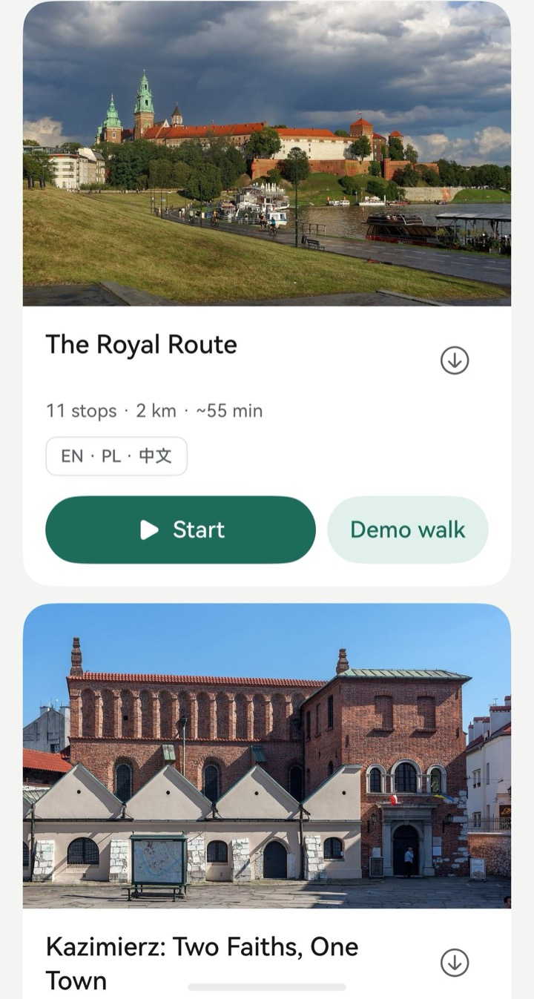

How it works
A guide in your pocket, three steps.
Pick a walk
Start it right away, or download it to use offline. One tap, no account.
Put your headphones in
Spoken directions lead you from stop to stop and re-plan if you wander off.
Hear the place as you reach it
Each story starts when you arrive and tells you exactly where to look.
Keeps talking, screen off
Runs in the background with lock-screen media controls and a gentle buzz on arrival.
A natural voice, your language
Studio-quality narration in English, Polish and Chinese. Switch language mid-story.
Stream or go offline
Start in seconds, or download a walk once and use it with no connection.
Any city, no app update
Walks and cities come from our signed course server, so new places arrive as content.
Fits your time
The best stop order is worked out on the phone; short on time, it keeps the stops that fit.
Native HarmonyOS
Location Kit, AVSession, background tasks, Core Speech, a home-screen card and a watch companion.

Try it on a HarmonyOS emulator
Download the app package, install it on a phone emulator (HarmonyOS 6, API 24) and tap Demo walk on any card: a simulated walk follows the real route so you can hear the whole tour from your desk.
Download citytour.hapWith the emulator running:
hdc install citytour.hap
Or build it from source:
git clone https://github.com/Svetoslav47/citytour cd citytour devecocli run --device "Pura 90" --modules entry